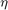
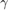

toPPT-2:
- Author : Jens Richter
- eMail : jrichter@iph.rwth-aachen.de
- Date : 28 February 2015
Contents
- Adds all files of toPPT to matlab path
- Latest release notes:
- Short description of toPPT:
- Acknowledgment:
- To make toPPT work:
- Examples - Introduction:
- Example 1 - Adding a figure:
- Example 2 - Setting a title:
- Example 3a - Adding a figure at a certain position:
- Example 3b - Adding a text with a bullet point:
- Example 4a - Adding a text with a bullet point to a new slide:
- Example 4b - Adding multiple texts with a bullet points to a new slide:
- Example 4c - Applying bold, underlined and italic to text elements (css-tags):
- Example 4d - Changing the color, size and font of text elements (css-tags):
- Example 4e - Changing the color, size and font and apply bold, underlined and italic to text elements:
- Example 4f - Using Hex-Code for defining the color of a text element:
- Example 4  - Using TeX in texts:
- Example 4  - Using TeX and css-tags in texts at the same time:
- Example 4 - Using TeX in texts together with matlab build in texlabel-function:
- Example 3c - Updating an existing slide identified by its title:
- Example 3d - Inserting content after an existing slide identified by its title:
- Example 3e - Inserting content in a new slide at slide number 4 (will shift all following slides):
- Example 3f - Updating an existing slide identified by its slide number:
- Example 5 - Adding Tables:
- Example 6 - Deactivating toPPT temporally:
- Example 7 - Changing the height and width of a figure:
- Example 8a - Changing the padding/gap of the active placing area of the slide:
- Example 8b - Change the 'dividing' of the slide:
- Example 9 - Change the resolution of the figure for exporting:
- Example 10 - Export figure as vector graphic:
- Example 11 - Specify parameters for export_fig directly via toPPT:
- Example 12a - QR-Code with test message 'Hello world':
- Example 12b - Adding MECard as QR Code
- Example 12c - Downloading the necessary jars from the internet:
- Example 13 - Applying a template to the active presentation:
- Example 14 - Saving a presentation:
- Example 15 - Closing a presentation:
- Done with the example. Lets close all generated figures.
- Valid Parmeters for toPPT:
- toPPT accepts the following predefined colors:
- toPPT accepts the following predefined TeX parameters:
Adds all files of toPPT to matlab path
fullpath = mfilename('fullpath'); [pathstr1,~,~] = fileparts(fullpath); addpath(genpath(pathstr1)); % Drive into toPPT folder. cd(pathstr1); clear pathstr1 fullpath;
Latest release notes:
- toPPT works together with Matlab 2014b and Office 2013.
- Minor bug fixes.
- Added QR code ability.
- Major changes in pptfigure to make it work together with Office 2013 and Matlab 2014b
- Moved all default values of toPPT into toPPT_config.m.
- Updated used version of export_fig to to version published at 28 Feb 2015
Short description of toPPT:
toPPT is a powerful tool for generating PowerPoint presentations programmatically defined in matlab. It will use different scripts to perform exports of figures, tables and texts. For this purpose it will use scripts written by myself and in addition scripts written by others (see Acknowledgment).
Acknowledgment:
- export_fig-script by Oliver Woodford http://www.mathworks.com/matlabcentral/fileexchange/23629-exportfig => Is used to generate pictures (png) from the desired figures.
- pptfigure.m by Dmitriy Aronov http://www.mathworks.com/matlabcentral/fileexchange/30124-smart-powerpoint -exporter/content/pptfigure.m => Is used for generating editable figures. An extracted part of it is used as tex2ppt converter.
- RGB triple of color name, Version 2 by Kristjan Jonasson http://www.mathworks.com/matlabcentral/fileexchange/24497-rgb-triple-of-color-name--version-2 => Is used to transform color names to hex values.
- Edit Distance Algorithm by Reza Ahmadzadeh http://www.mathworks.com/matlabcentral/fileexchange/39049-edit-distance-algorithm => Is used to calculate the edit distance for placing a new slide near an other slide with a certain title.
- QR Code Generator based on zxing taken from another project of myself http://www.mathworks.com/matlabcentral/fileexchange/49808-qr-code-generator-based-on-zxing => Is used to create the QR-Codes (Please also check the Acknowledgment of QR-Code directly).
To make toPPT work:
Simply add toPPT and all subdirectories and folders to your matlab path. Example.m will do this automatically for you. The path has to be writable and readable because toPPT has to temporally save data. For a detailed help simply use 'help toPPT'.
Examples - Introduction:
With some examples we will learn how toPPT works - In addition we will use a little subscript example_helper.m to create dummy figures.
Example 1 - Adding a figure:
The challenge is to place an image in png format centred in your presentation. For this example PowerPoint is already closed or open. The program will automatically use an open presentation for adding content. If PowerPoint is closed it will open it and create a blank presentation.
figure1 = example_helper(1); %Gets a figure toPPT(figure1); % By default a new slide is created when adding a figure
Example 2 - Setting a title:
We want to add a title to the slide of Example 1.
toPPT('setTitle','My first figure with toPPT-beta1, Example 1-2');
Example 3a - Adding a figure at a certain position:
We want to add an image in png format to the upper right half (NorthEastHalf) of the presentation and one image to the lower half (SouthEastHalf) of the image. For detailed information use 'help getPosParameters'.
figure1 = example_helper(1); figure2 = example_helper(2); toPPT(figure1,'pos','NEH'); % NEH = NorthEastHalf toPPT(figure2,'pos','SEH','SlideNumber','current'); % NEH = SouthEastHalf toPPT('setTitle','Example 3a - Adding a figure at a certain position');
Example 3b - Adding a text with a bullet point:
We want to set a title and add a text as a bullet point. By default text is added centred to the current slide as a bullet point (Refers to the comment 'SlideNumber','current'). Remember: By default figures are added to a new slide (Refers to the comment 'SlideNumber','append').
toPPT('My first bullet item','pos','W','SlideNumber','append'); % We want to add it to the W = West toPPT('setTitle','Example 3b - Adding a text with a bullet point');
Example 4a - Adding a text with a bullet point to a new slide:
We want to add a list of texts with bullet points to a NEW slide. It is important to put the list into an cellaray {}.
toPPT({'Text1','Text2','Text3'},'SlideNumber','append');
toPPT('setTitle','Example 4a - Adding a text with a bullet point to a new slide');
Example 4b - Adding multiple texts with a bullet points to a new slide:
We add a list of texts in the East (new slide) with numbers instead of bullet points.
toPPT({'Text1','Text2','Text3'},'SlideNumber','append','setBulletNumbers',1,'pos','W');
toPPT({'Text1','Text2','Text3'},'setBullets',0,'pos','E'); % E = East
toPPT('setTitle','Example 4b - Adding multiple texts with a bullet point to a new slide');
Example 4c - Applying bold, underlined and italic to text elements (css-tags):
We want to make some parts of our texts underlined, italic or/and bold.
toPPT({'<b>Bold</b>','<b><u>Bold and underlined</u></b> meets <i>Italic</i>','Normal'},'SlideNumber','append');
toPPT('setTitle','Example 4c - Applying bold, underlined and italic to text elements (css-tags)');
Example 4d - Changing the color, size and font of text elements (css-tags):
We want to assign another color, different size and a different font to our texts. Have a look on 'toPPT accepts the following predefined colors' in this example-file for a list of all known colors.
toPPT({'<s color:red>Red text,</s> Black text, <s color:blue>Blue text</s>','<s font-family:Times New Roman>Using Times New Roman</s>','<s font-size:40>BIG</s>'},'SlideNumber','append');
toPPT('setTitle','Example 4d - Changing the color, size and font of text elements (css-tags)');
Example 4e - Changing the color, size and font and apply bold, underlined and italic to text elements:
Now we want to combine different tags (s,<u>...) together.
toPPT({'<s color:green; font-size:36; font-family:Aharoni>Mixed One</s>','<i><u><b><s font-family:Times New Roman>Bold, underlined,italic and Times</s></b></u></i>'},'SlideNumber','append');
toPPT('setTitle','Example 4e - Changing color, size and font and apply bold, underlined and italic');
Example 4f - Using Hex-Code for defining the color of a text element:
Now we want to use hex colors - it is important to use a leading '#' in front of the hexcolor. The syntax for the tag s (s means style) is adapted from the css language. It is absolutely necessary that each argument within the s-tag is closed via ";" (for the last argument the > works as closing ";")
toPPT('<s color:#5F9EA0; font-size:22; font-family:Aharoni>CadetBlue</s> meets <s color:#FFA07A; font-size:22; font-family:Aharoni>LightSalmon</s>','SlideNumber','append'); toPPT('setTitle','Example 4f - Using Hex-Code for defining the color of a text element');
Example 4 - Using TeX in texts:
Now we want to show how the TeX interpreter works. In general the TeX interpreter is turned on by default. Example 12 Saving a presentation shows that it is sometimes necessary to turn off the interpreter. An overview of all possible TeX characters can be found in "toPPT accepts the following predefined TeX parameters" in this example-file. In general TeX can be combined with all other css-tags.
toPPT({'Lets start with something easy x = \sqrt\x^2','I like red formulas <s color:red>x = \sqrt\x^2<\s>', 'And big blue ones <i><b><s color:blue; font-size:40; font-family:Times New Roman>x = \sqrt\x^2<\s></b></i>'},'SlideNumber','append');
toPPT('setTitle','Example 4 \eta - Using TeX in texts');
Example 4 - Using TeX and css-tags in texts at the same time:
It is also possible to use the TeX tag \color By default the css tags (s etc.) have priority in combination with TeX tags.
toPPT('Colored formula with Tex: \color{red}a^2+b^2 = c^2','SlideNumber','append'); toPPT('TeX color is overwritten by "normal" tag: <s color:blue>\color{red}a^2+b^2 = c^2</s>','pos','E'); toPPT('setTitle','Example 4 \gamma - Using TeX and css-tags in texts at the same time');
Example 4 - Using TeX in texts together with matlab build in texlabel-function:
We also want to do some more complicated stuff, sometimes we are to lazy to write the TeX-code so we can use the inbuild matlab function texlabel.
myTexText = texlabel('lambda12^(3/2)/pi - pi*delta^(2/3)'); toPPT(myTexText,'SlideNumber','append'); toPPT(['<s color:orange>',texlabel('H(x)*psi(x)=E*psi(x)'),'<\s>'],'pos','NEH'); toPPT({'TeX Interpreter is off:',['<s color:blue>',texlabel('H(x)*psi(x)=E*psi(x)'),'<\s>']},'pos','SWH','TeX',0); % TeX interpreter turned off toPPT('setTitle','Example 4 \phi - Using TeX in texts together with matlab build in texlabel-function');
Example 3c - Updating an existing slide identified by its title:
The parameter SlideNumber can be used differently:
- A slide can be found by its title.
- Even if the spelling is slightly wrong the slide can be found via edit distances.
toPPT('New updated Text on Slide of Example 3a','SlideNumber','Example 3a - Adding a figure at a certain position','pos','SWH'); % Found by its title. toPPT('New updated Text on Slide of Example 3a without right spelling of title','SlideNumber','Axample 3a - bddinaag a figure at a cerdastain positiddd5on','pos','SW'); % Found by its title with wrong spelling.
Example 3d - Inserting content after an existing slide identified by its title:
The parameter SlideAddMethod can be used to insert content after an existing slide instead of updating the slide. By default slides are updated.
toPPT('New inserted Text after Slide of Example 3a','SlideNumber','Axample 3a - bddinaag a figure at a cerdastain positiddd5on','SlideAddMethod','insert','pos','NW'); % Inserting content after choosen slide toPPT('setTitle','Example 3d - Inserting content after an existing slide identified by its title');
Example 3e - Inserting content in a new slide at slide number 4 (will shift all following slides):
toPPT('New inserted Text after slide Number 4','SlideNumber',4,'SlideAddMethod','insert','pos','NW'); % New slide will becomse slide 4 toPPT('setTitle','Example 3e - Inserting content in a new slide at slide number 4 (will shift all following slides)');
Example 3f - Updating an existing slide identified by its slide number:
toPPT('New updated Text in slide Number 4','SlideNumber',4,'pos','SW'); % Adds a new textbox to slide 4.
Example 5 - Adding Tables:
We want to create a new slide and add a centred table to this slide. In addition we want to add two smaller tables on another slide positioned in the West and East.
- All content for the table is put into cell arrays (One cell for the captions and one cell/matrix etc. for the content). It doesn't matter if the content-cell has numeric and string values at the same time. toPPT will automatically detects if it has to rotate the content to fit the number of caption entries.
- In general setTable accepts different arguments as Input:
- A two dimensional cell that fully defines the desired cell NOT including the captions. (5a)
- Row or column vectors. toPPT will automatically detect if it is a row or column vector by checking the number of caption entries. It is NOT possible to add row and column vectors at the same time. (5b)
- A numeric matrix. (5c)
The syntax is: toPPT('setTable',{stringCellTableCaption, matrix/Vector/cell})
helpTableCell = cell(2,3);
helpTableCell{1,1} = 'Me is first';
helpTableCell{1,2} = 'Me is second';
helpTableCell{1,3} = 'Me is third';
helpTableCell{2,1} = 'Me is fourth';
helpTableCell{2,2} = 'Me is fifth';
helpTableCell{2,3} = 'Me is sixth';
% First slide - It is important to add "helpTableCell" into an extra cell {}
toPPT('setTable',{{'Caption1','Caption2','Caption3'},{helpTableCell}},'SlideNumber','append');
toPPT('setTitle','Example 5a - Adding tables using cell of strings');
% Second slide - auto rotate will be used
toPPT('setTable',{{'Caption1','Caption2'},{helpTableCell}},'SlideNumber','append');
toPPT('setTitle','Example 5a - Adding tables using auto rotate');
% Third slide - It is important to add all vectors into an extra cell {}
helperVector1 = [1,2,3];
helperVector2 = {'Me is 1','Me is 2','Me is 3'};
toPPT('setTable',{{'Col 1','Col 2'},{helperVector1,helperVector2}},'SlideNumber','append','pos','E');
toPPT('setTitle','Example 5b - Adding tables using vectors and cells mixed');
% With autorotation
toPPT('setTable',{{'Col 1','Col 2','Col 3'},{helperVector1,helperVector2}},'SlideNumber','append','pos','E');
toPPT('setTitle','Example 5b - Adding tables using auto rotate with vectors');
% Fourth slide
toPPT('setTable',{{'Col 1','Col 2'},ones(2,2)},'SlideNumber','append','pos','E');
toPPT('setTable',{{'Col 1','Col 2'},ones(3,2)},'pos','W','Width',200,'Height',150);
toPPT('setTitle','Example 5c - Adding tables using a matrix');
Example 6 - Deactivating toPPT temporally:
Maybe we don't want to add something to the presentation all the time because we are just testing our script...
figure1 = example_helper(1); doPublishing = 0; toPPT(figure1,'pub',doPublishing); % Nothing happens doPublishing = 1; toPPT(figure1,'pub',doPublishing); % Now we publish toPPT('setTitle','Example 6 - Deactivating toPPT temporally and reactivating');
Example 7 - Changing the height and width of a figure:
We want to add an image to the middle tile of the slide and stretch it to 100% of the width. We also want to add another image and stretch it to 200px in height which will be placed in the Middle East.
figure1 = example_helper(1); toPPT(figure1,'pos','M','Width%',100,'Height%',100); toPPT('setTitle','Example 7'); toPPT(figure1,'pos','ME','Height',200,'Width',100); % ME = MiddelEast toPPT('setTitle','Example 7 - Changing the height and width of a figure');
Example 8a - Changing the padding/gap of the active placing area of the slide:
We want to change the default gap between our centred tile in the North and in the West/East.
figure1 = example_helper(1); toPPT(figure1,'gapN',200,'gapWE',150); toPPT('setTitle','Example 8a - Changing the padding/gap of the active placing area of the slide');
Example 8b - Change the 'dividing' of the slide:
We want to change the divide property of the tiles - by default each image is stretched to 100% of the tile height by keeping the aspect ratio. For more information see 'help toPPT'.
figure1 = example_helper(1); figure2 = example_helper(2); toPPT(figure1,'pos','E','Width%',60,'divide',30); toPPT(figure2,'pos','W','SlideNumber','current','Width%',60,'divide',30); toPPT('setTitle','Example 8b - Change the dividing of the slide');
Example 9 - Change the resolution of the figure for exporting:
We want to increase (for publications etc.)/ decrease (smaller file size, faster) the resolution of the png image that is used for exporting a figure.
figure1 = example_helper(1); toPPT(figure1,'m',3); % Higher value, default is m = 2 toPPT('setTitle','Example 9 - Change the resolution of the figure for exporting (high resolution)'); toPPT(figure1,'m',1); % Lower value, default is m = 2 toPPT('setTitle','Example 9 - Change the resolution of the figure for exporting (low resolution)');
Example 10 - Export figure as vector graphic:
We want to export our image as vector graphic. This process is quite challenging. For huge figures with a lot of points it is not recommended to use this function. In case the export fails toPPT will use the default png export as a fall back solution anyway.
figure1 = example_helper(2); toPPT(figure1,'format','vec'); toPPT('setTitle','Example 10 - Export figure as vector graphic');
Example 11 - Specify parameters for export_fig directly via toPPT:
toPPT makes strong use of 'export_fig'. Maybe in some situations it is necessary to supply parameters for export_fig directly. For this reason all commands that are not recognized be toPPT are directly forwarded as input to export_fig. Please refer to help export_fig. For some commands export_fig needs to have Ghostscript installed.
In this example we change the colorspace to CMYK and gray for the same figure before exporting to powerpoint.
figure1 = example_helper(1); toPPT(figure1,'pos','W','-CMYK'); % colorspace CMYK toPPT(figure1,'pos','E','SlideNumber','current','-gray'); % colorspace gray toPPT('setTitle','Example 11 - Change the colorspace (specify parameters for exportfig directly via toPPT)');
Example 12a - QR-Code with test message 'Hello world':
Annotation: QR-Code generation is only available for Matlab2014a and later. The QR-Code generation is based on zxings java libraries. For this purpose toPPT will import all necessary jar files on the fly from a maven repository server (check qrcode_config.m for details). In addition QRcode_gen has an option to download the necessary jar files and save them into a predefined directory. If you are not willing to download precompiled jars from the web (what is understandable in terms of security issues) you can access zxings open source project (http://github.com/zxing) check the source code and compile the jars yourself. For a list of all available parameters call help toPPT.
We want to simply add a QR-Code with a test message.
message = 'This is a hello world test message'; toPPT(message,'TextAsQR',1); toPPT('setTitle','Example 12a - QR-Code with test message "Hello world"');
Example 12b - Adding MECard as QR Code
We want to add an QR code to the left corner at the bottom. The QR code in this example is representing a MECARD. In addition we want to change the background and QR-Code color.
message = 'MECARD:N:Skywalker,Luke;ADR:76 9th Avenue, 4th Floor, New York, NY 10011;TEL:1234567891011;EMAIL:luke@skywalker.com;;'; toPPT(message,'TextAsQR',1,'QR-Version',40,'pos','SW','Left',5,'gapS',15,'QR-Color','#00549F','QR-BgColor','#D5FFFF'); toPPT(['<s color:#00549F; font-size:22; font-family:Aharoni>Thank you for your attention.',char(13),'Please scan the QR Code for Luke Skywalkers contact information.</s> '],'pos','ME','setBullets',0); toPPT('setTitle','Example 12b - Adding MECard as QR Code');
Example 12c - Downloading the necessary jars from the internet:
This will just add the necessary syntax for downloading the jars. We will not do that at this point so you can decide on your own if you want to download them.
toPPT('Downloading jars for QR-Code generator is done by <b>toPPT(someStringMessage,''QR-DownloadJars'',1)</b>','SlideNumber','append'); toPPT('setTitle','Example 12c - Syntax for downloading the necessary jars from the internet');
Example 13 - Applying a template to the active presentation:
Now we want to apply a template to our presentation. The template file path has to be absolute.
templatePath = [pwd,'\IPH Slides_EN.potx']; % The template path has to be absolute! toPPT('applyTemplate',templatePath); toPPT('We applied a template!','SlideNumber','append'); toPPT('setTitle','Example 13 - Applying a template to the active presentation');
Example 14 - Saving a presentation:
Now we want to save our presentation There are three ways of saving
Case 1: We only supply the savePath as argument
=> Presentation will be saved in path as 'The Current Date and Time _new_presentation.pptx'.
Case 2: We only supply the saveFilename as argument
=> Presentation will be saved in pwd with the desired filename.
Case 3: We supply savePath and saveFilename as argument
=> Presentation will be saved in savePath with the desired filename.
The savepath has to be absolute.
savePath = pwd; saveFilename = 'My first presentation with toPPT'; toPPT('savePath',savePath,'saveFilename',saveFilename); toPPT(['We saved our presentation to: ',savePath,'/',saveFilename],'SlideNumber','append','TeX',0); % Because we want to "show" a filename we should turn of TeX otherwise all "\" will be gone etc. toPPT('setTitle','Example 14 - Saving a presentation');
Example 15 - Closing a presentation:
We can close a presentation with toPPT - this can be helpful if we want to create multiple different presentations and close them after we saved them. Because we do not want to close the presentation in this example we just explain it on an extra slide.
toPPT('Closing a presentation is done via the syntax <b>toPPT(''close'',1)</b>','SlideNumber','append'); toPPT('setTitle','Example 15 - Closing a presentation');
Done with the example. Lets close all generated figures.
close all;
Valid Parmeters for toPPT:
For a detailed help simply use 'help toPPT'
toPPT accepts the following predefined colors:
%White colors 'FF','FF','FF', 'White' 'FF','FA','FA', 'Snow' 'F0','FF','F0', 'Honeydew' 'F5','FF','FA', 'MintCream' 'F0','FF','FF', 'Azure' 'F0','F8','FF', 'AliceBlue' 'F8','F8','FF', 'GhostWhite' 'F5','F5','F5', 'WhiteSmoke' 'FF','F5','EE', 'Seashell' 'F5','F5','DC', 'Beige' 'FD','F5','E6', 'OldLace' 'FF','FA','F0', 'FloralWhite' 'FF','FF','F0', 'Ivory' 'FA','EB','D7', 'AntiqueWhite' 'FA','F0','E6', 'Linen' 'FF','F0','F5', 'LavenderBlush' 'FF','E4','E1', 'MistyRose' %Grey colors' '80','80','80', 'Gray' 'DC','DC','DC', 'Gainsboro' 'D3','D3','D3', 'LightGray' 'C0','C0','C0', 'Silver' 'A9','A9','A9', 'DarkGray' '69','69','69', 'DimGray' '77','88','99', 'LightSlateGray' '70','80','90', 'SlateGray' '2F','4F','4F', 'DarkSlateGray' '00','00','00', 'Black' %Red colors 'FF','00','00', 'Red' 'FF','A0','7A', 'LightSalmon' 'FA','80','72', 'Salmon' 'E9','96','7A', 'DarkSalmon' 'F0','80','80', 'LightCoral' 'CD','5C','5C', 'IndianRed' 'DC','14','3C', 'Crimson' 'B2','22','22', 'FireBrick' '8B','00','00', 'DarkRed' %Pink colors 'FF','C0','CB', 'Pink' 'FF','B6','C1', 'LightPink' 'FF','69','B4', 'HotPink' 'FF','14','93', 'DeepPink' 'DB','70','93', 'PaleVioletRed' 'C7','15','85', 'MediumVioletRed' %Orange colors 'FF','A5','00', 'Orange' 'FF','8C','00', 'DarkOrange' 'FF','7F','50', 'Coral' 'FF','63','47', 'Tomato' 'FF','45','00', 'OrangeRed' %Yellow colors 'FF','FF','00', 'Yellow' 'FF','FF','E0', 'LightYellow' 'FF','FA','CD', 'LemonChiffon' 'FA','FA','D2', 'LightGoldenrodYellow' 'FF','EF','D5', 'PapayaWhip' 'FF','E4','B5', 'Moccasin' 'FF','DA','B9', 'PeachPuff' 'EE','E8','AA', 'PaleGoldenrod' 'F0','E6','8C', 'Khaki' 'BD','B7','6B', 'DarkKhaki' 'FF','D7','00', 'Gold' %Brown colors 'A5','2A','2A', 'Brown' 'FF','F8','DC', 'Cornsilk' 'FF','EB','CD', 'BlanchedAlmond' 'FF','E4','C4', 'Bisque' 'FF','DE','AD', 'NavajoWhite' 'F5','DE','B3', 'Wheat' 'DE','B8','87', 'BurlyWood' 'D2','B4','8C', 'Tan' 'BC','8F','8F', 'RosyBrown' 'F4','A4','60', 'SandyBrown' 'DA','A5','20', 'Goldenrod' 'B8','86','0B', 'DarkGoldenrod' 'CD','85','3F', 'Peru' 'D2','69','1E', 'Chocolate' '8B','45','13', 'SaddleBrown' 'A0','52','2D', 'Sienna' '80','00','00', 'Maroon' %Green colors '00','80','00', 'Green' '98','FB','98', 'PaleGreen' '90','EE','90', 'LightGreen' '9A','CD','32', 'YellowGreen' 'AD','FF','2F', 'GreenYellow' '7F','FF','00', 'Chartreuse' '7C','FC','00', 'LawnGreen' '00','FF','00', 'Lime' '32','CD','32', 'LimeGreen' '00','FA','9A', 'MediumSpringGreen' '00','FF','7F', 'SpringGreen' '66','CD','AA', 'MediumAquamarine' '7F','FF','D4', 'Aquamarine' '20','B2','AA', 'LightSeaGreen' '3C','B3','71', 'MediumSeaGreen' '2E','8B','57', 'SeaGreen' '8F','BC','8F', 'DarkSeaGreen' '22','8B','22', 'ForestGreen' '00','64','00', 'DarkGreen' '6B','8E','23', 'OliveDrab' '80','80','00', 'Olive' '55','6B','2F', 'DarkOliveGreen' '00','80','80', 'Teal' %Blue colors '00','00','FF', 'Blue' 'AD','D8','E6', 'LightBlue' 'B0','E0','E6', 'PowderBlue' 'AF','EE','EE', 'PaleTurquoise' '40','E0','D0', 'Turquoise' '48','D1','CC', 'MediumTurquoise' '00','CE','D1', 'DarkTurquoise' 'E0','FF','FF', 'LightCyan' '00','FF','FF', 'Cyan' '00','FF','FF', 'Aqua' '00','8B','8B', 'DarkCyan' '5F','9E','A0', 'CadetBlue' 'B0','C4','DE', 'LightSteelBlue' '46','82','B4', 'SteelBlue' '87','CE','FA', 'LightSkyBlue' '87','CE','EB', 'SkyBlue' '00','BF','FF', 'DeepSkyBlue' '1E','90','FF', 'DodgerBlue' '64','95','ED', 'CornflowerBlue' '41','69','E1', 'RoyalBlue' '00','00','CD', 'MediumBlue' '00','00','8B', 'DarkBlue' '00','00','80', 'Navy' '19','19','70', 'MidnightBlue' %Purple colors '80','00','80', 'Purple' 'E6','E6','FA', 'Lavender' 'D8','BF','D8', 'Thistle' 'DD','A0','DD', 'Plum' 'EE','82','EE', 'Violet' 'DA','70','D6', 'Orchid' 'FF','00','FF', 'Fuchsia' 'FF','00','FF', 'Magenta' 'BA','55','D3', 'MediumOrchid' '93','70','DB', 'MediumPurple' '99','66','CC', 'Amethyst' '8A','2B','E2', 'BlueViolet' '94','00','D3', 'DarkViolet' '99','32','CC', 'DarkOrchid' '8B','00','8B', 'DarkMagenta' '6A','5A','CD', 'SlateBlue' '48','3D','8B', 'DarkSlateBlue' '7B','68','EE', 'MediumSlateBlue' '4B','00','82', 'Indigo' %Gray repeated with spelling grey '80','80','80', 'Grey' 'D3','D3','D3', 'LightGrey' 'A9','A9','A9', 'DarkGrey' '69','69','69', 'DimGrey' '77','88','99', 'LightSlateGrey' '70','80','90', 'SlateGrey' '2F','4F','4F', 'DarkSlateGrey'
toPPT accepts the following predefined TeX parameters:
'alpha','upsilon','sim','beta','phi','leq','gamma','chi', ...
'infty','delta','psi','clubsuit','epsilon','omega','diamondsuit', ...
'zeta','Gamma','heartsuit','eta','Delta','spadesuit','theta', ...
'Theta','leftrightarrow','vartheta','Lambda','leftarrow','iota', ...
'Xi','uparrow','kappa','Pi','rightarrow','lambda','Sigma', ...
'downarrow','mu','Upsilon','circ','nu','Phi','pm','xi','Psi','geq', ...
'pi','Omega','propto','rho','forall','partial','sigma','exists', ...
'bullet','varsigma','ni','div','tau','cong','neq','equiv','approx', ...
'aleph','Im','Re','wp','otimes','oplus','oslash','cap','cup', ...
'supseteq','supset','subseteq','subset','int','in','o','rfloor', ...
'lceil','nabla','lfloor','cdot','ldots','perp','neg','prime', ...
'wedge','times','0','rceil','surd','mid','vee','varpi','copyright', ...
'langle','rangle','^','_','{','}','sqrt'